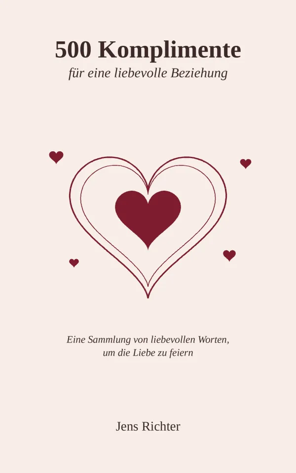

Beziehung & Liebe
Für Paare, die wieder mehr voneinander mitbekommen wollen.

500 Komplimente für eine liebevolle Beziehung500 Komplimente für deine Partnerin oder deinen Partner, sortiert nach zehn Themen. Aufschlagen, einen Satz aussuchen, fertig. Kommunikation und VerständnisWie ihr besser zuhört, Wünsche klar aussprecht und fairer streitet. Klappt auch, wenn nur einer von euch liest.
Kommunikation und VerständnisWie ihr besser zuhört, Wünsche klar aussprecht und fairer streitet. Klappt auch, wenn nur einer von euch liest. Lieben und lieben lassenSelbstliebe als Grundlage für die Partnerschaft, mit 53 Übungen und jeweils einer Variante für Singles.
Lieben und lieben lassenSelbstliebe als Grundlage für die Partnerschaft, mit 53 Übungen und jeweils einer Variante für Singles. Tschüss TrennungsschmerzWas nach einer Trennung in dir passiert und was du selbst tun kannst, in deinem eigenen Tempo.
Tschüss TrennungsschmerzWas nach einer Trennung in dir passiert und was du selbst tun kannst, in deinem eigenen Tempo. Zwischen Alltag und uns140 Gesprächsfragen für Paare, die im Alltagstrubel wieder mehr voneinander erfahren wollen.
Zwischen Alltag und uns140 Gesprächsfragen für Paare, die im Alltagstrubel wieder mehr voneinander erfahren wollen. In 30 Tagen zu mehr Vertrauen in der BeziehungEine Übung pro Tag für Paare, die sich wieder aufeinander verlassen wollen.
In 30 Tagen zu mehr Vertrauen in der BeziehungEine Übung pro Tag für Paare, die sich wieder aufeinander verlassen wollen.